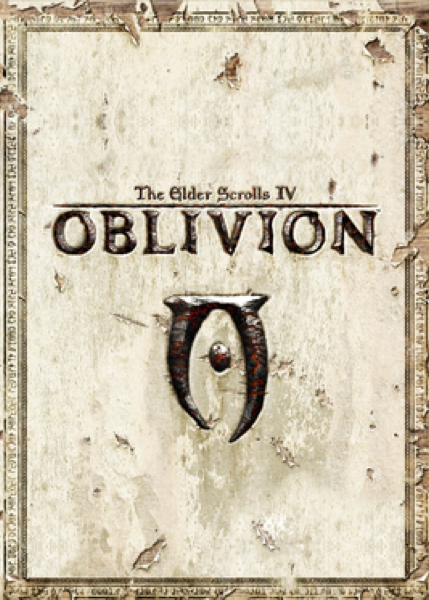

RPG · 2006
Oblivion
Cyrodiil's open gates and infinite side-quests defined the HD-era RPG.

Cover: Wikipedia: The Elder Scrolls IV: Oblivion
Facts
- Released
- 2006-03-20
- Genre
- RPG
- Category
- RPG
- Platforms
- Mobile, PC, PlayStation, Xbox
- Developers
- 4J Studios, Bethesda Game Studios, Superscape
- Publishers
- 1C Company, 2K, Bethesda Softworks, Vir2L Studios
PC requirements
- Minimum
- [object Object]